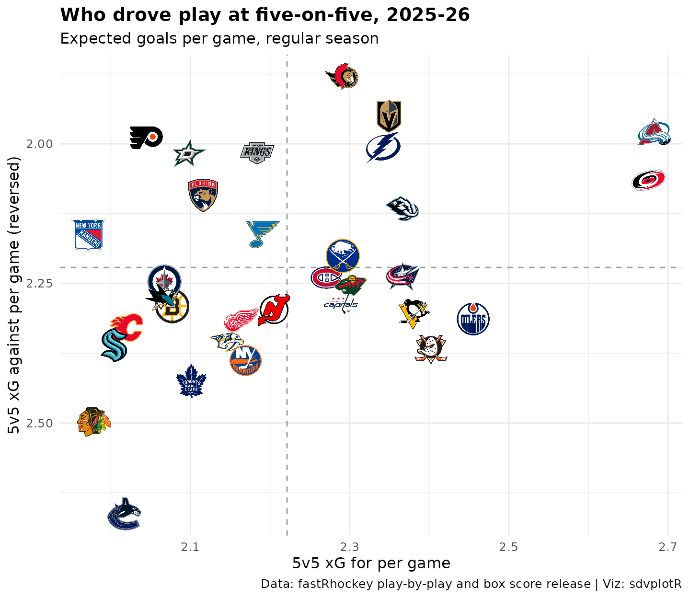
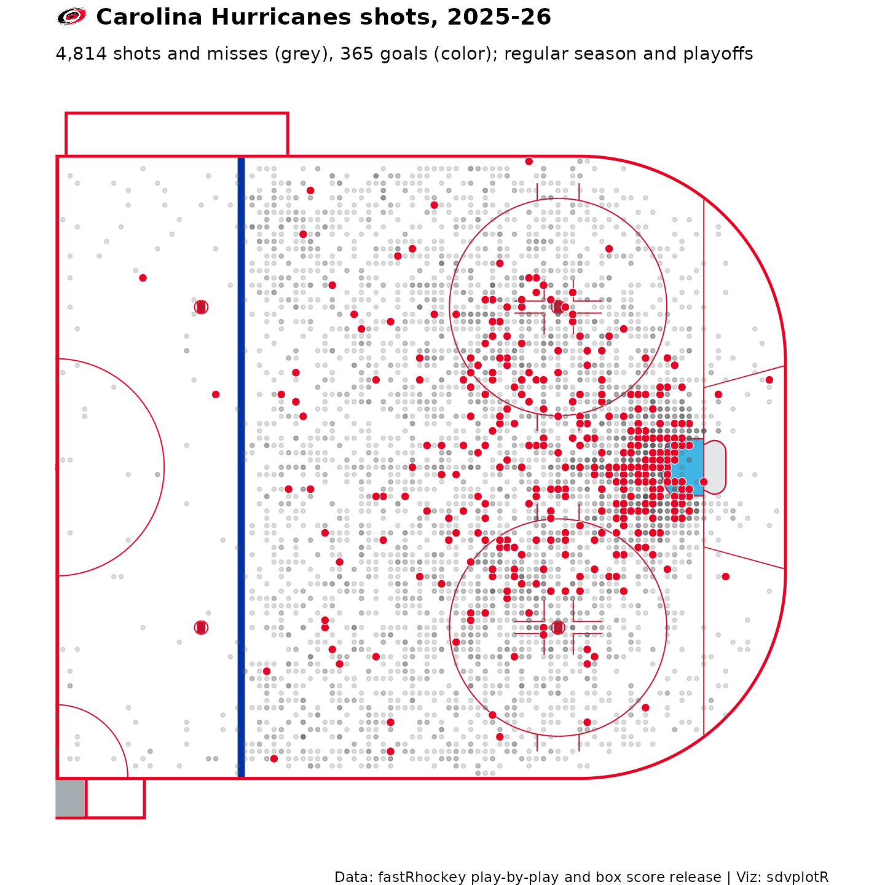
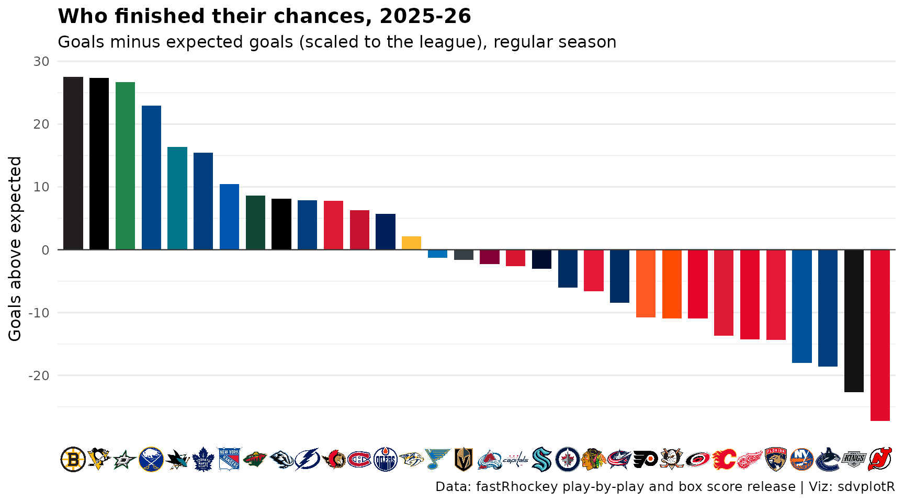
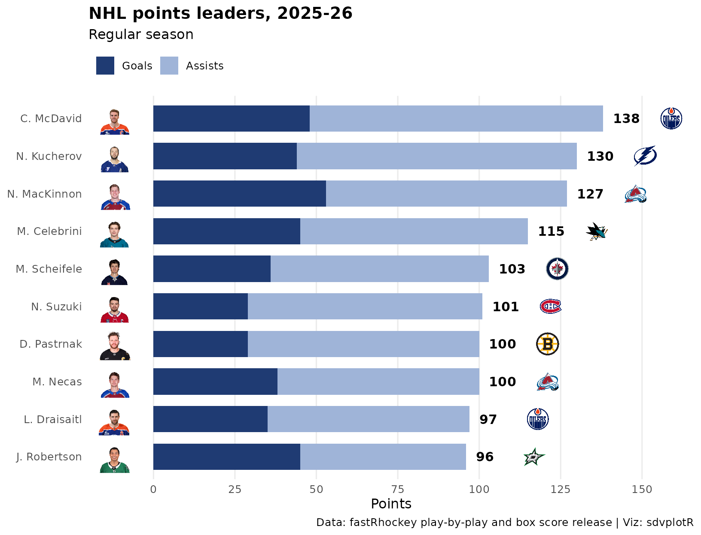
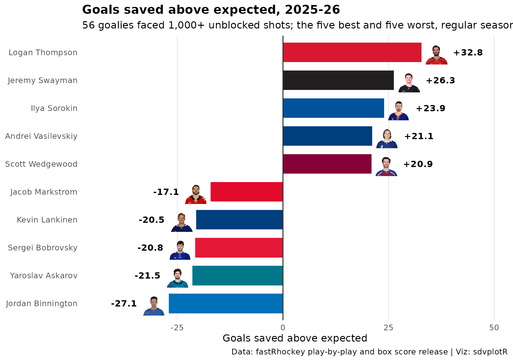
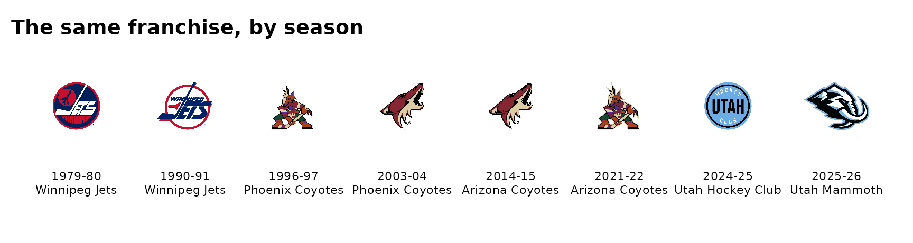
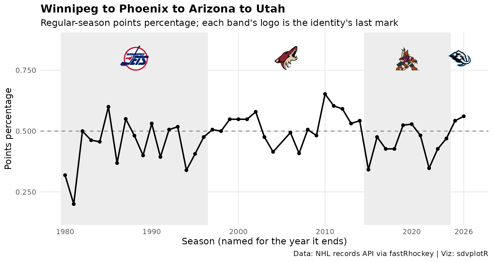
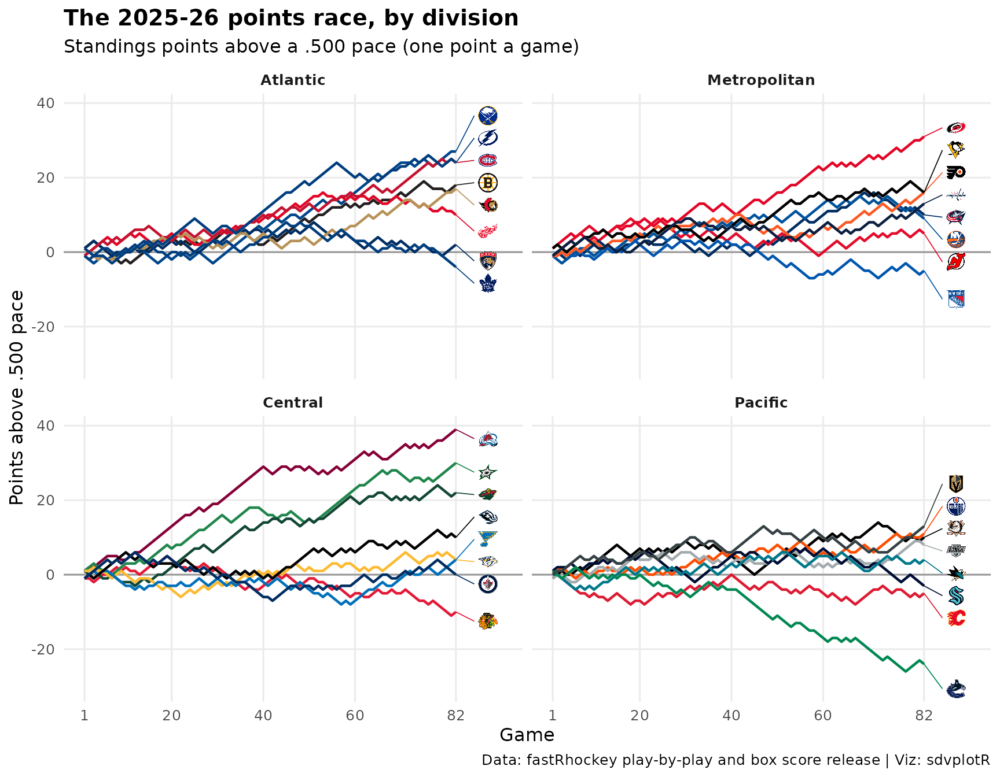
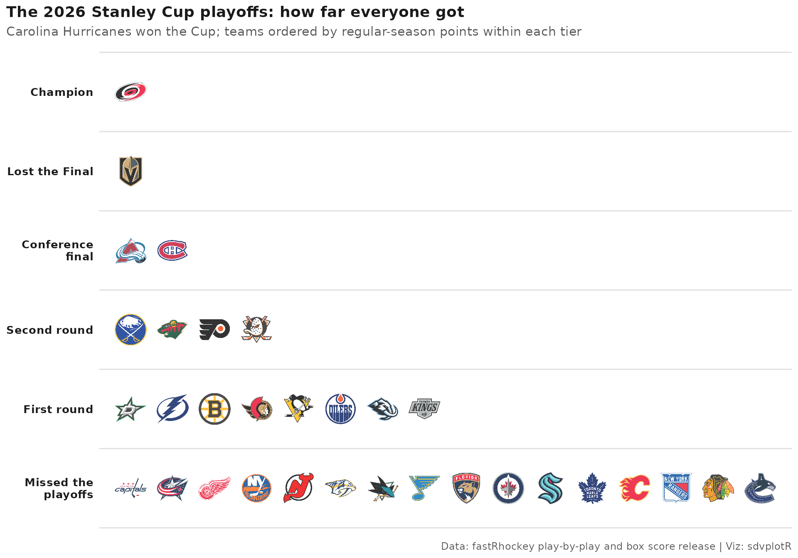

On this page
Ten charts and tables from the 2025-26 NHL season: goal differential in team colors, the final standings, five-on-five expected goals, the champion’s shot map on a rink, finishing and goaltending against expected goals, the scoring leaders with their headshots, one franchise’s marks from Winnipeg to Utah, the points race and the playoffs as a tier list. The data comes through fastRhockey: its release files (play-by-play with an expected-goals value on every unblocked shot, and box scores), and the NHL’s own APIs for the official standings and the franchise records.
Load the season
The release files are read when this page is built. Each
load_nhl_*() call downloads one season from the
SportsDataverse data releases; the columns kept here are the ones the
examples use.
season <- 2026 # the 2025-26 season, named for the year it ends
pbp <- fastRhockey::load_nhl_pbp_lite(seasons = season) |>
select(
game_id, season_type, period, event_type, event_team_abbr, event_team_type,
home_abbr, away_abbr, strength_state, x_fixed, y_fixed, xg,
event_goalie_id, event_goalie_name
)
# game_id 2025020001 is a regular-season game (02); 2025030416 a playoff game
# (03): round 4, series 1, game 6
team_box <- fastRhockey::load_nhl_team_box(seasons = season) |>
select(game_id, game_date, team_abbrev, goals, goals_against) |>
mutate(game_type = game_id %/% 10000 %% 100)
skater_box <- fastRhockey::load_nhl_skater_box(seasons = season) |>
filter(game_id %/% 10000 %% 100 == 2) |>
select(game_id, team_abbrev, player_id, player_name, goals, assists, points)
c(plays = nrow(pbp), team_games = nrow(team_box), skater_games = nrow(skater_box))
#> plays team_games skater_games
#> 443569 2788 47231The official standings come from api-web.nhle.com and the franchise records from records.nhl.com:
standings <- fastRhockey::nhl_standings(date = "2026-04-16") |> # the last day of the regular season
select(
team_abbr, team_name, conference_name, division_name, division_sequence, games_played,
wins, losses, ot_losses, points, point_pctg, regulation_wins, goals_for, goals_against,
goal_differential, streak_code, streak_count
)
# one franchise's every season: the Winnipeg Jets (1979), the Coyotes, Utah
lineage <- fastRhockey::nhl_records_franchise_season_results() |>
filter(game_type_id == 2, team_id %in% c(33, 27, 53, 59, 68), season_id <= 20252026) |>
select(season_id, team_id, tri_code, team_name, games_played, points)These two calls are read from a snapshot taken on October 05, 2026
(fastRhockey 1.0.0), because the NHL’s APIs are not called when this
site is built; data-raw/article_fixtures.R takes it with
the same code.
A few of the NHL’s three-letter codes differ from the ESPN
abbreviations sdvplotR keys its team colors on.
clean_team_abbrs() converts them once, so every join and
color scale below agrees:
standings <- standings |>
mutate(team = clean_team_abbrs(team_abbr, sport = "nhl"))
standings |>
filter(team != team_abbr) |>
select(team_name, team_abbr, team)
#> team_name team_abbr team
#> 1 Tampa Bay Lightning TBL TB
#> 2 Utah Mammoth UTA UTAH
#> 3 Los Angeles Kings LAK LA
#> 4 New Jersey Devils NJD NJ
#> 5 San Jose Sharks SJS SJ
api <- "Data: NHL API via fastRhockey | Viz: sdvplotR"
release <- "Data: fastRhockey play-by-play and box score release | Viz: sdvplotR"1. Goal differential in team colors
Bars in each team’s color from scale_fill_sdv(), with
the logo at the end of each bar from geom_sdv_logos().
goal_diff <- standings |>
arrange(desc(goal_differential), team) |>
mutate(
team = factor(team, levels = team),
logo_y = goal_differential + if_else(goal_differential >= 0, 9, -9)
)
ggplot(goal_diff, aes(team, goal_differential)) +
geom_col(aes(fill = team), width = 0.75) +
geom_hline(yintercept = 0, colour = "grey20", linewidth = 0.4) +
geom_sdv_logos(aes(y = logo_y, team = team), sport = "nhl", width = 0.027) +
scale_fill_sdv(sport = "nhl") +
labs(
title = "NHL goal differential, 2025-26",
subtitle = "Regular season, goals for minus goals against",
x = NULL,
y = "Goal differential",
caption = api
) +
theme_minimal(base_size = 12) +
theme(
legend.position = "none",
axis.text.x = element_blank(),
panel.grid.major.x = element_blank(),
plot.title = element_text(face = "bold")
)
2. Final standings by division
A gt table grouped by division, with gt_sdv_logos() for
the logos and gt_theme_athletic() for the look. The goal
differential fill goes on after the theme so the theme cannot replace
it.
nhl_divisions <- c("Atlantic", "Metropolitan", "Central", "Pacific")
lim <- max(abs(standings$goal_differential))
standings |>
mutate(
division = factor(division_name, levels = nhl_divisions),
logo = team,
streak = paste0(streak_code, streak_count)
) |>
arrange(division, division_sequence) |>
select(
division, logo, team_name, games_played, wins, losses, ot_losses, points,
point_pctg, regulation_wins, goals_for, goals_against, goal_differential, streak
) |>
gt(groupname_col = "division") |>
gt_sdv_logos(columns = "logo", sport = "nhl", height = 22) |>
fmt_number(columns = point_pctg, decimals = 3) |>
cols_align(align = "left", columns = team_name) |>
cols_label(
logo = "", team_name = "Team", games_played = "GP", wins = "W", losses = "L",
ot_losses = "OTL", points = "PTS", point_pctg = "PTS%", regulation_wins = "RW",
goals_for = "GF", goals_against = "GA", goal_differential = "DIFF", streak = "STRK"
) |>
tab_header(
title = "NHL standings, 2025-26",
subtitle = "Final regular season, grouped by division"
) |>
tab_source_note(api) |>
gt_theme_athletic() |>
data_color(
columns = goal_differential,
palette = c("#c84630", "white", "#2a7ab9"),
domain = c(-lim, lim)
)| NHL standings, 2025-26 | ||||||||||||
| Final regular season, grouped by division | ||||||||||||
| Team | GP | W | L | OTL | PTS | PTS% | RW | GF | GA | DIFF | STRK | |
|---|---|---|---|---|---|---|---|---|---|---|---|---|
| Atlantic | ||||||||||||
 |
Buffalo Sabres | 82 | 50 | 23 | 9 | 109 | 0.665 | 42 | 288 | 241 | 47 | OT1 |
 |
Tampa Bay Lightning | 82 | 50 | 26 | 6 | 106 | 0.646 | 40 | 290 | 231 | 59 | L1 |
 |
Montréal Canadiens | 82 | 48 | 24 | 10 | 106 | 0.646 | 34 | 283 | 256 | 27 | L1 |
 |
Boston Bruins | 82 | 45 | 27 | 10 | 100 | 0.610 | 33 | 272 | 250 | 22 | W2 |
 |
Ottawa Senators | 82 | 44 | 27 | 11 | 99 | 0.604 | 38 | 278 | 246 | 32 | W1 |
 |
Detroit Red Wings | 82 | 41 | 31 | 10 | 92 | 0.561 | 30 | 241 | 258 | -17 | L1 |
 |
Florida Panthers | 82 | 40 | 38 | 4 | 84 | 0.512 | 32 | 251 | 276 | -25 | W3 |
 |
Toronto Maple Leafs | 82 | 32 | 36 | 14 | 78 | 0.476 | 23 | 253 | 299 | -46 | L5 |
| Metropolitan | ||||||||||||
 |
Carolina Hurricanes | 82 | 53 | 22 | 7 | 113 | 0.689 | 39 | 296 | 240 | 56 | W1 |
 |
Pittsburgh Penguins | 82 | 41 | 25 | 16 | 98 | 0.598 | 34 | 293 | 268 | 25 | L3 |
 |
Philadelphia Flyers | 82 | 43 | 27 | 12 | 98 | 0.598 | 27 | 250 | 243 | 7 | W3 |
 |
Washington Capitals | 82 | 43 | 30 | 9 | 95 | 0.579 | 37 | 263 | 244 | 19 | W4 |
 |
Columbus Blue Jackets | 82 | 40 | 30 | 12 | 92 | 0.561 | 28 | 253 | 253 | 0 | L2 |
 |
New York Islanders | 82 | 43 | 34 | 5 | 91 | 0.555 | 29 | 233 | 241 | -8 | L3 |
 |
New Jersey Devils | 82 | 42 | 37 | 3 | 87 | 0.530 | 29 | 230 | 254 | -24 | L1 |
 |
New York Rangers | 82 | 34 | 39 | 9 | 77 | 0.470 | 25 | 238 | 250 | -12 | W1 |
| Central | ||||||||||||
 |
Colorado Avalanche | 82 | 55 | 16 | 11 | 121 | 0.738 | 48 | 302 | 203 | 99 | W3 |
 |
Dallas Stars | 82 | 50 | 20 | 12 | 112 | 0.683 | 38 | 279 | 226 | 53 | W5 |
 |
Minnesota Wild | 82 | 46 | 24 | 12 | 104 | 0.634 | 31 | 272 | 240 | 32 | W1 |
 |
Utah Mammoth | 82 | 43 | 33 | 6 | 92 | 0.561 | 33 | 268 | 240 | 28 | L1 |
 |
St. Louis Blues | 82 | 37 | 33 | 12 | 86 | 0.524 | 33 | 231 | 258 | -27 | W4 |
 |
Nashville Predators | 82 | 38 | 34 | 10 | 86 | 0.524 | 28 | 247 | 269 | -22 | L2 |
 |
Winnipeg Jets | 82 | 35 | 35 | 12 | 82 | 0.500 | 28 | 231 | 260 | -29 | L4 |
 |
Chicago Blackhawks | 82 | 29 | 39 | 14 | 72 | 0.439 | 22 | 213 | 275 | -62 | W1 |
| Pacific | ||||||||||||
 |
Vegas Golden Knights | 82 | 39 | 26 | 17 | 95 | 0.579 | 30 | 265 | 250 | 15 | W3 |
 |
Edmonton Oilers | 82 | 41 | 30 | 11 | 93 | 0.567 | 32 | 282 | 269 | 13 | W1 |
 |
Anaheim Ducks | 82 | 43 | 33 | 6 | 92 | 0.561 | 26 | 273 | 288 | -15 | W1 |
 |
Los Angeles Kings | 82 | 35 | 27 | 20 | 90 | 0.549 | 22 | 225 | 247 | -22 | L1 |
 |
San Jose Sharks | 82 | 39 | 35 | 8 | 86 | 0.524 | 27 | 251 | 292 | -41 | W1 |
 |
Seattle Kraken | 82 | 34 | 37 | 11 | 79 | 0.482 | 26 | 226 | 263 | -37 | L3 |
 |
Calgary Flames | 82 | 34 | 39 | 9 | 77 | 0.470 | 27 | 212 | 259 | -47 | W1 |
 |
Vancouver Canucks | 82 | 25 | 49 | 8 | 58 | 0.354 | 15 | 216 | 316 | -100 | L1 |
| Data: NHL API via fastRhockey | Viz: sdvplotR | ||||||||||||
3. Five-on-five expected goals
Expected goals (xG) weigh every unblocked shot by its chance of
scoring, so summed for and against each team at five-on-five they show
who drives play, with less luck in them than goals. The y axis is
reversed, so the top right is where you want to be;
geom_mean_lines() marks the league averages.
five <- pbp |>
filter(season_type == "R", strength_state == "5v5", !is.na(xg)) |>
mutate(defending = if_else(event_team_abbr == home_abbr, away_abbr, home_abbr))
xg_for <- five |>
summarise(xgf = sum(xg), .by = event_team_abbr) |>
rename(team_abbrev = event_team_abbr)
xg_against <- five |>
summarise(xga = sum(xg), .by = defending) |>
rename(team_abbrev = defending)
games_played <- team_box |>
filter(game_type == 2) |>
count(team_abbrev, name = "gp")
xg <- xg_for |>
inner_join(xg_against, by = "team_abbrev") |>
inner_join(games_played, by = "team_abbrev") |>
mutate(
xgf_pg = xgf / gp,
xga_pg = xga / gp,
team = clean_team_abbrs(team_abbrev, sport = "nhl")
)
stopifnot(nrow(xg) == 32)
ggplot(xg, aes(xgf_pg, xga_pg)) +
geom_mean_lines(aes(x0 = xgf_pg, y0 = xga_pg), colour = "grey60") +
geom_sdv_logos(aes(team = team), sport = "nhl", width = 0.06) +
scale_y_reverse() +
labs(
title = "Who drove play at five-on-five, 2025-26",
subtitle = "Expected goals per game, regular season",
x = "5v5 xG for per game",
y = "5v5 xG against per game (reversed)",
caption = release
) +
theme_minimal(base_size = 12) +
theme(plot.title = element_text(face = "bold"))
4. The champion’s shot map on the rink
sdv_surface("nhl", team) draws a regulation rink with
‘sportyR’, its center line, center faceoff circle and boards in the
team’s colors, and the shots go on top as ordinary layers. The champion
comes from the data: the team with four wins in round 4. In the release,
x_fixed has the home team shooting right and the away team
left, so flipping the away shots (both x and y) puts every shot in one
attacking end. ggtitle_image() puts the logo in the
title.
champion <- team_box |>
filter(game_type == 3, game_id %/% 100 %% 10 == 4) |>
summarise(wins = sum(goals > goals_against), .by = team_abbrev) |>
filter(wins == 4) |>
pull(team_abbrev)
champ <- clean_team_abbrs(champion, sport = "nhl")
champ_name <- standings$team_name[standings$team == champ]
shots <- pbp |>
filter(
event_team_abbr == champion,
event_type %in% c("SHOT", "MISSED_SHOT", "GOAL"),
!is.na(x_fixed)
) |>
mutate(
flip = if_else(event_team_type == "away", -1, 1),
x = x_fixed * flip,
y = y_fixed * flip,
goal = event_type == "GOAL"
)
sdv_surface("nhl", champ, display_range = "offense") +
geom_point(aes(x, y), data = filter(shots, !goal), colour = "grey35", alpha = 0.2, size = 0.9) +
geom_point(
aes(x, y),
data = filter(shots, goal), shape = 21, size = 2.2, stroke = 0.3,
colour = "white", fill = sdv_team_colors("nhl", champ)
) +
ggtitle_image(
title_image = champ,
title = paste(champ_name, "shots, 2025-26"),
subtitle = paste0(
format(sum(!shots$goal), big.mark = ","), " shots and misses (grey), ",
sum(shots$goal), " goals (color); regular season and playoffs"
),
image_height = 20,
sport = "nhl"
) +
labs(caption = release) +
theme_title_image(size = 14, face = "bold") +
# the rink layers leave the background transparent
theme(plot.background = element_rect(fill = "white", colour = NA))
5. Finishing: goals above expected
Goals minus expected goals in all situations, shootouts left out. The
release’s xG model was fit on earlier seasons and expects more goals
than 2025-26 produced, so every team’s xG is first scaled by the
league’s goals-to-xG ratio; what is left is finishing relative to the
league. scale_x_sdv() and theme_x_sdv() put
the logos on the axis.
attempts <- pbp |>
filter(season_type == "R", !is.na(xg), period <= 4) # period 5 is the shootout
ratio <- sum(attempts$event_type == "GOAL") / sum(attempts$xg)
finishing <- attempts |>
summarise(goals = sum(event_type == "GOAL"), xg = sum(xg) * ratio, .by = event_team_abbr) |>
mutate(gax = goals - xg, team = clean_team_abbrs(event_team_abbr, sport = "nhl")) |>
arrange(desc(gax), team) |>
mutate(team = factor(team, levels = team))
ggplot(finishing, aes(team, gax, fill = team)) +
geom_col(width = 0.75) +
geom_hline(yintercept = 0, colour = "grey20", linewidth = 0.4) +
scale_fill_sdv(sport = "nhl") +
scale_x_sdv(sport = "nhl", size = 20) +
labs(
title = "Who finished their chances, 2025-26",
subtitle = "Goals minus expected goals (scaled to the league), regular season",
x = NULL,
y = "Goals above expected",
caption = release
) +
theme_minimal(base_size = 12) +
theme_x_sdv() +
theme(
legend.position = "none",
panel.grid.major.x = element_blank(),
plot.title = element_text(face = "bold")
)
The model expects 12% more goals than the league scored. After scaling, the Boston Bruins finished best (+27.5 goals) and the New Jersey Devils worst (-27.2).
6. Scoring leaders with headshots
The release’s box scores identify players by their NHL API ID
(McDavid is 8478402), not their ESPN athlete ID, which is why the
headshots pass id_type = "league": it draws NHL API IDs
from the NHL’s image CDN. Leave id_type unset for ESPN
athlete IDs, such as those in fastRhockey’s espn_nhl_*()
data. Both are plain numbers, so the wrong setting draws someone else or
nothing. Goals and assists stack into points, and each player’s team is
the one he played his last game for.
leaders <- skater_box |>
arrange(game_id) |>
summarise(
name = last(player_name), team_abbrev = last(team_abbrev),
goals = sum(goals), assists = sum(assists), points = sum(points),
.by = player_id
) |>
filter(min_rank(desc(points)) <= 10) |>
mutate(team = clean_team_abbrs(team_abbrev, sport = "nhl")) |>
arrange(points, desc(name)) |>
mutate(name = factor(name, levels = name))
bars <- bind_rows(
transmute(leaders, name, stat = "Goals", n = goals),
transmute(leaders, name, stat = "Assists", n = assists)
) |>
mutate(stat = factor(stat, levels = c("Assists", "Goals"))) # goals stack from zero
ggplot(leaders, aes(y = name)) +
geom_col(aes(x = n, fill = stat), data = bars, width = 0.7) +
geom_sdv_headshots(
aes(x = -12, player_id = player_id),
sport = "nhl", id_type = "league", height = 0.085
) +
geom_text(aes(x = points + 3, label = points), hjust = 0, fontface = "bold", size = 4) +
geom_sdv_logos(aes(x = points + 21, team = team), sport = "nhl", height = 0.065) +
scale_fill_manual(values = c(Goals = "#1f3b73", Assists = "#9fb4d8"), breaks = c("Goals", "Assists")) +
scale_x_continuous(
breaks = seq(0, 150, 25),
limits = c(-20, max(leaders$points) + 28),
expand = expansion(0)
) +
labs(
title = "NHL points leaders, 2025-26",
subtitle = "Regular season",
x = "Points",
y = NULL,
fill = NULL,
caption = release
) +
theme_minimal(base_size = 12) +
theme(
legend.position = "top",
legend.justification = "left",
panel.grid.major.y = element_blank(),
panel.grid.minor = element_blank(),
plot.title = element_text(face = "bold")
)
7. Goaltending: goals saved above expected
The play-by-play names the goalie in net for every unblocked shot, so the same expected goals grade the goalies: goals saved above expected (GSAx) is the scaled xG a goalie faced minus the goals he allowed. Among the goalies who faced 1,000 unblocked shots, the five best and five worst, in bars of their team’s color (the team he faced his last shot for) with the headshot at the end.
faced <- pbp |>
filter(
season_type == "R", event_type %in% c("SHOT", "MISSED_SHOT", "GOAL"),
!is.na(xg), !is.na(event_goalie_id), period <= 4
) |>
mutate(goalie_team = if_else(event_team_abbr == home_abbr, away_abbr, home_abbr))
ratio_faced <- sum(faced$event_type == "GOAL") / sum(faced$xg)
goalies <- faced |>
arrange(game_id) |>
summarise(
shots = n(), goals = sum(event_type == "GOAL"), xga = sum(xg) * ratio_faced,
team_abbrev = last(goalie_team),
.by = c(event_goalie_id, event_goalie_name)
) |>
mutate(gsax = xga - goals) |>
filter(shots >= 1000)
ends <- goalies |>
filter(min_rank(desc(gsax)) <= 5 | min_rank(gsax) <= 5) |>
arrange(gsax) |>
mutate(
name = factor(event_goalie_name, levels = event_goalie_name),
team = clean_team_abbrs(team_abbrev, sport = "nhl"),
side = sign(gsax)
)
ggplot(ends, aes(gsax, name)) +
geom_col(aes(fill = team), width = 0.7) +
geom_vline(xintercept = 0, colour = "grey20") +
geom_sdv_headshots(
aes(x = gsax + 3.5 * side, player_id = event_goalie_id),
sport = "nhl", id_type = "league", height = 0.085
) +
geom_text(
aes(x = gsax + 7.5 * side, label = sprintf("%+.1f", gsax), hjust = if_else(side > 0, 0, 1)),
fontface = "bold", size = 3.8
) +
scale_fill_sdv(sport = "nhl") +
scale_x_continuous(expand = expansion(add = 13)) +
labs(
title = "Goals saved above expected, 2025-26",
subtitle = paste(nrow(goalies), "goalies faced 1,000+ unblocked shots; the five best and five worst, regular season"),
x = "Goals saved above expected",
y = NULL,
caption = release
) +
theme_minimal(base_size = 12) +
theme(
legend.position = "none",
panel.grid.major.y = element_blank(),
panel.grid.minor = element_blank(),
plot.title = element_text(face = "bold")
)
8. One franchise, many marks: Winnipeg, Phoenix, Arizona, Utah
The original Winnipeg Jets moved to Phoenix in 1996, became the
Arizona Coyotes in 2014, and their hockey operations moved to Salt Lake
City in 2024 as the Utah Hockey Club, the Utah Mammoth since 2025.
sdvplotR maps every one of the franchise’s codes, the original Jets’
WIN included, to today’s club, so a dataset from any era
gets a logo and a color and groups as one franchise. Today’s Winnipeg
Jets, the former Atlanta Thrashers, are WPG:
clean_team_abbrs(c("WIN", "PHX", "ARI", "UTA", "WPG"), sport = "nhl")
#> [1] "UTAH" "UTAH" "UTAH" "UTAH" "WPG"That key draws today’s mark. Given a season,
geom_sdv_logos() draws the mark a club wore that season
instead. Historical NHL marks are keyed by the NHL’s code for that
identity (WIN, PHX, ARI), and
seasons are named for the year they end. One mark per logo era, with the
club’s name that season from the NHL’s records:
marks <- tibble(
key = c("WIN", "WIN", "PHX", "PHX", "ARI", "ARI", "UTA", "UTA"),
season = c(1980, 1991, 1997, 2004, 2015, 2022, 2025, 2026)
) |>
inner_join(transmute(lineage, season = season_id %% 10000, team_name), by = "season") |>
mutate(
x = row_number(),
# the records write "Winnipeg Jets (1979)" to tell the two Jets apart
label = paste0(season - 1, "-", substr(season, 3, 4), "\n", sub(" \\(\\d{4}\\)$", "", team_name))
)
ggplot(marks, aes(x, 1)) +
geom_sdv_logos(aes(team = key, season = season), sport = "nhl", width = 0.08) +
geom_text(aes(y = 0.55, label = label), size = 3, lineheight = 0.95, vjust = 1) +
scale_x_continuous(expand = expansion(add = 0.6)) +
scale_y_continuous(limits = c(0.2, 1.4)) +
labs(title = "The same franchise, by season") +
theme_void(base_size = 12) +
theme(plot.title = element_text(face = "bold"), plot.margin = margin(8, 8, 8, 8))
The NHL’s records list the Utah club as a new franchise from 2024-25, so its two seasons are picked by team ID along with the earlier ones. The franchise’s points percentage across all 46 seasons, one shade per identity:
lineage <- lineage |>
mutate(season = season_id %% 10000, pts_pct = points / (2 * games_played)) |>
arrange(season)
bands <- lineage |>
summarise(from = min(season) - 0.5, to = max(season) + 0.5, .by = tri_code) |>
mutate(shade = row_number() %% 2 == 1, mid = (from + to) / 2, mark_season = to - 0.5)
ggplot(lineage, aes(season, pts_pct)) +
geom_rect(
aes(xmin = from, xmax = to, ymin = -Inf, ymax = Inf, fill = shade),
data = bands, inherit.aes = FALSE
) +
geom_hline(yintercept = 0.5, linetype = "dashed", colour = "grey50") +
geom_line(colour = sdv_team_colors("nhl", "UTAH"), linewidth = 0.9) +
geom_point(colour = sdv_team_colors("nhl", "UTAH"), size = 1.6) +
geom_sdv_logos(
aes(x = mid, y = 0.8, team = tri_code, season = mark_season),
data = bands, sport = "nhl", height = 0.13, inherit.aes = FALSE
) +
scale_fill_manual(values = c(`TRUE` = "grey93", `FALSE` = NA), guide = "none") +
scale_x_continuous(breaks = c(1980, 1990, 2000, 2010, 2020, 2026)) +
scale_y_continuous(labels = scales::label_number(accuracy = 0.001), limits = c(0.15, 0.87)) +
labs(
title = "Winnipeg to Phoenix to Arizona to Utah",
subtitle = "Regular-season points percentage; each band's logo is the identity's last mark",
x = "Season (named for the year it ends)",
y = "Points percentage",
caption = "Data: NHL records API via fastRhockey | Viz: sdvplotR"
) +
theme_minimal(base_size = 12) +
theme(panel.grid.minor = element_blank(), plot.title = element_text(face = "bold"))
9. The points race, by division
Standings points game by game (two for a win, one for an overtime or shootout loss), measured against a .500 pace of one point a game so the lines spread apart instead of all climbing together. The box scores have the score, the play-by-play says which games went past regulation, and the totals match the official standings for every team.
Division rivals often share a color, so each line takes its team’s
primary color from sdv_team_colors() unless that is too
close to one already used in its division, and then its secondary.
last_period <- summarise(pbp, last_period = max(period), .by = game_id)
stopifnot(identical(class(team_box$game_id), class(last_period$game_id)))
race <- team_box |>
filter(game_type == 2) |>
inner_join(last_period, by = "game_id") |>
mutate(pts = case_when(goals > goals_against ~ 2, last_period > 3 ~ 1, .default = 0)) |>
arrange(game_date, game_id) |>
mutate(game = row_number(), points = cumsum(pts), .by = team_abbrev) |>
inner_join(
select(standings, team_abbr, team, division_name, division_sequence, official = points),
by = c(team_abbrev = "team_abbr")
) |>
mutate(above = points - game, division = factor(division_name, levels = nhl_divisions))
final <- filter(race, game == 82)
stopifnot(nrow(final) == 32, all(final$points == final$official))
# the primary, unless it is within 20 (CIE 2000 color difference) of the white
# background or of a color already taken, and the secondary is farther away
distinct_colours <- function(primary, secondary, min_gap = 20) {
taken <- "#FFFFFF"
gap <- function(x) {
min(farver::compare_colour(
farver::decode_colour(x), farver::decode_colour(taken), "rgb",
method = "cie2000"
))
}
for (i in seq_along(primary)) {
swap <- gap(primary[i]) < min_gap && gap(secondary[i]) > gap(primary[i])
taken <- c(taken, if (swap) secondary[i] else primary[i])
}
taken[-1]
}
line_colours <- final |>
arrange(division, division_sequence) |>
inner_join(sdv_team_colors("nhl", type = "all"), by = c(team = "team_abbr")) |>
mutate(colour = distinct_colours(primary, secondary), .by = division)
# teams that finish close together would stack their logos, so spread the logos
# at least `gap` points apart (keeping their order and average) and draw a
# connector from each line's end to its logo
spread <- function(y, gap) {
o <- order(y)
s <- y[o]
for (i in seq_along(s)[-1]) s[i] <- max(s[i], s[i - 1] + gap)
y[o] <- s - mean(s) + mean(y)
y
}
final <- mutate(final, logo_y = spread(above, gap = 6), .by = division)
ggplot(race, aes(game, above, colour = team)) +
geom_hline(yintercept = 0, colour = "grey60") +
geom_line(linewidth = 0.8) +
geom_segment(aes(x = 82, xend = 86, yend = logo_y), data = final, linewidth = 0.3) +
# inherit.aes = FALSE: a colour aesthetic would tint the logos
geom_sdv_logos(
aes(x = 89, y = logo_y, team = team),
data = final, sport = "nhl", height = 0.075, inherit.aes = FALSE
) +
scale_colour_manual(values = setNames(line_colours$colour, line_colours$team)) +
scale_x_continuous(breaks = c(1, 20, 40, 60, 82), limits = c(1, 92)) +
facet_wrap(~division, ncol = 2) +
labs(
title = "The 2025-26 points race, by division",
subtitle = "Standings points above a .500 pace (one point a game)",
x = "Game",
y = "Points above .500 pace",
caption = release
) +
theme_minimal(base_size = 12) +
theme(
legend.position = "none",
panel.grid.minor = element_blank(),
strip.text = element_text(face = "bold"),
plot.title = element_text(face = "bold")
)
10. The playoffs as a tier list
How far every team went, from the playoff game IDs (the seventh digit
is the round), with regular-season points deciding the order within a
tier. sdv_team_tiers() with theme = "light"
draws the list on white; on its default dark background the black logos
would disappear.
reached <- team_box |>
filter(game_type == 3) |>
summarise(round = max(game_id %/% 100 %% 10), .by = team_abbrev)
tiers <- standings |>
left_join(reached, by = c(team_abbr = "team_abbrev")) |>
mutate(tier_no = case_when(
team_abbr == champion ~ 1,
is.na(round) ~ 6,
.default = 6 - round
)) |>
arrange(tier_no, desc(points), team) |>
mutate(tier_rank = row_number(), .by = tier_no)
stopifnot(sum(tiers$tier_no < 6) == 16)
sdv_team_tiers(
select(tiers, tier_no, tier_rank, team),
sport = "nhl",
title = "The 2026 Stanley Cup playoffs: how far everyone got",
subtitle = paste(champ_name, "won the Cup; teams ordered by regular-season points within each tier"),
caption = release,
tier_desc = c(
"1" = "Champion",
"2" = "Lost the Final",
"3" = "Conference final",
"4" = "Second round",
"5" = "First round",
"6" = "Missed the playoffs"
),
width = 0.05,
theme = "light"
)